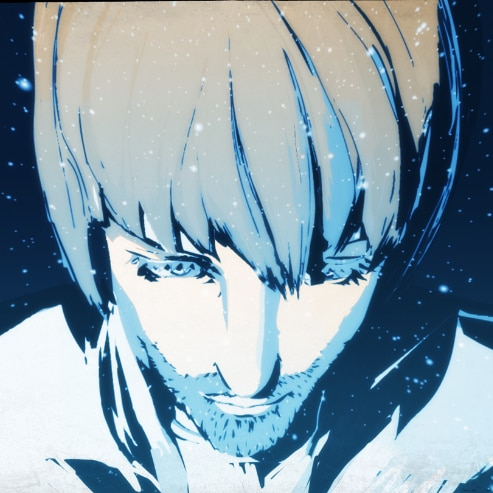
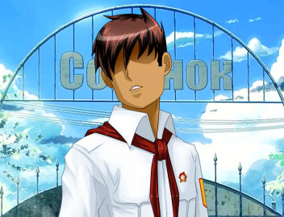

25-летний Семён продолжал вести свой одинокий образ жизни, пока однажды зимой ему не позвонил друг, предложивший отправиться на встречу выпускников. Не особо горя желанием отправляться на встречу, Семён всё же решает принять предложение друга.
Стоя ранним утром на остановке, он садится на автобус модели ЛиАЗ, следующий по маршруту 410, но во время поездки засыпает. Семён в просыпается в автобусе модели «ИКАРУС» где-то за городом в летний сезон, отчего впадает в панику и не может ничего сообразить. Поблизости он видит пионерлагерь под названием «Совёнок», чья архитектура напоминает советскую. Здесь его встречает девушка по имени Славя, которая принимает его за опоздавшего пионера, поскольку внешне Семён выглядит на 17 лет (о чём он в тот момент ещё не знает).